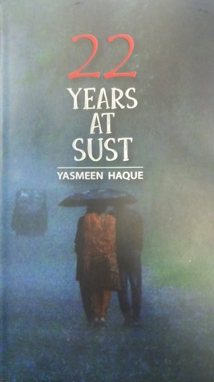

এবার বইমেলা যেয়ে সর্বপ্রথম ঢুকেছিলাম তাম্রলিপির স্টলে । সামনে এই বইটি পেয়ে ভূমিকা অংশ পড়ে ফেলি । সিদ্ধান্ত নিতে সময় লাগেনি । তাই বইমেলা থেকে কেনা বইগুলির মধ্যে প্রথম বই হিসেবে কিনে ফেলি প্রফেসর ডঃ ইয়াসমিন হক ম্যাডামের কর্মজীবনের বিভিন ঘটনা নিয়ে রচিত “সাস্টে ২২ বছর” বইটি ।
নাম দেখেই বইটির বিষয়বস্তু সম্পর্কে আন্দাজ করা যায় । সাস্টে ডঃ ইয়াসমিন হক ম্যাডামের ২২ বছরের কর্মজীবনের বিভিন্ন গুরুত্বপূর্ণ- অগুরুত্বপূর্ণ , হাসি- আনন্দের, দুঃখ- বেদনার অভিজ্ঞতা বর্ণিত হয়েছে এই বইটিতে।
বইটির শুরু হয় আমেরিকায় বসবাসরত অবস্থায় স্যার এবং ম্যাডামের সাস্টে চাকরি পাওয়ার মধ্য দিয়ে (অধিকাংশ মানুষেরই জানার কথা, তবুও কারো অজানা থাকলে বলে দিচ্ছি ডঃ ইয়াসমিন হক ম্যাডাম আমাদের শ্রদ্ধেয় ডঃ জাফর ইকবাল স্যারের সহধর্মিণী)। আমেরিকাতে প্রতিষ্ঠিত এক শিক্ষক দম্পতির বাংলাদেশে আনকোরা নতুন এক বিশ্ববিদ্যালয়ে যোগদানের মত সাহসী সিদ্ধান্ত গ্রহণের মধ্যে দিয়ে বইটির ঘটনাপ্রবাহের সূচনা । সময়ের সাথে সাথে কিভাবে তাদের কর্মজীবনকে দুর্বিষহ করে তোলা হয়েছে- তাঁর সুস্পষ্ট কিন্তু নাতিদীর্ঘ আলোচনা এখানে করা আছে ।

বইটি লেখা হয়েছে বেশ হাল্কা মেজাজে। অনেকটা গল্প শোনানোর মত করে । আমার নিজের কখনই মনে হয়নি যে বই পড়ছি । বইটির সবচেয়ে ভালো দিক লেখক পাঠকের সাথে তাঁর এক ধরনের মনস্তাত্ত্বিক সম্পর্ক স্থাপন করতে সক্ষম হয়েছেন। তাই যখন তিনি কোন দুঃখের ঘটনার বর্ণনা দিয়েছেন তখন কষ্ট পেয়েছি, আবার যখন কোন মজার কাহিনি বলেছেন তখন শব্দকরে হেসে উঠেছি। তাই একঘেয়েমি লেগে যাওয়ার সুযোগ একদম নেই ।
বইটি পড়ছিলাম আর সাথে সাথে ভাবছিলাম যে একজন বিশ্ববিদ্যালয়ের শিক্ষক চাইলে কি না করতে পারেন । বিভিন্ন সময়ে বিভিন্ন ছাত্র-ছাত্রীদের মৃত্যুর সময়কার পরিস্থিতি সামলানোর বর্ণনা এখানে যেভাবে করা হয়েছে- একজন শিক্ষক হিসেবে স্যার এবং ম্যাডামের এই কাজগুলি প্রশংসার দাবীদার । শ্রদ্ধায় মাথা বারে বারে নত হয়ে এসেছে ।
সাস্টে ছাত্র রাজনীতির যে কদর্য – বীভৎস রুপ এই বইটিতে ফুটে উঠেছে, তাতে বার বার শিহরিত হয়েছি আর সৃষ্টিকর্তাকে ধন্যবাদ জানিয়েছি কুয়েটের মত ছাত্র রাজনীতির নোংরা রুপ বিবর্জিত একটি বিশ্ববিদ্যালয়ে পড়াশোনা করার সুযোগ পেয়ে । এখন থেকে ফিস্টের সময় কাউকে আগে ঢুকে যেতে দেখলে অথবা হলের সীট নিয়ে রাজনীতি হতে দেখলে একদম বিরক্ত হব না । অন্তত মানুষ মেরে ফেলার সাপেক্ষে এই কাজগুলি কিছুই না । যেভাবে সাস্টে শিক্ষার্থীরা ছাত্র রাজনীতির শিকার হয়েছে- তা বেশ মর্মান্তিক ।
আমেরিকাতে থেকে ফিরে আসার পর বাংলাদেশের নতুন পরিবেশে অনেক কিছুই তারা বুঝে উঠতে পারেন নি । সে সময়কার কিছু বোকামির বর্ণনা পড়ে বেশ একটু বিরক্ত হয়ে গিয়েছিলাম যে হাজার হোক, তারা বাঙালি। তারা কিভাবে এমন বোকামি করেন । পুরো বইটিতে এই একটি সময়ই হয়ত একটু বিরক্ত হয়েছিলাম।
একটি জিনিস বিশেষ ভাবে আমার ভালো লেগেছে (যদিও তা বইতে কোথাও সরাসরি ফুটে ওঠেনি)। তাহল স্যার এবং ম্যাডামের মাঝের রসায়ন। তাদের একে- অপরের অপর বিশ্বাস- বোঝাপড়া যদি খুব মজবুত না হত, তাহলে তারা যেমন ঝড়-ঝাপটার মধ্যে দিয়ে অতিক্রম করেছেন, তাদের ব্যক্তিগত সম্পর্কের উপর সেটি প্রভাব ফেলত ।
বইটি এমন কোন মাস্ট রিড বই না । তবে প্রিয় ব্যাক্তিত্ব হিসেবে জাফর স্যার এবং ইয়াসমিন ম্যাডামের ঘটনাবহুল কর্মজীবন সম্পর্কে কারো যদি জানার আগ্রহ থাকে- তাহলে বইটি অবশ্যই সুখপাঠ্য হবে বলে আমার বিশ্বাস ।
জিও
২১-০২-২০১৯